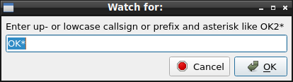
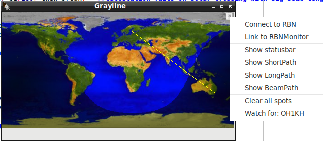
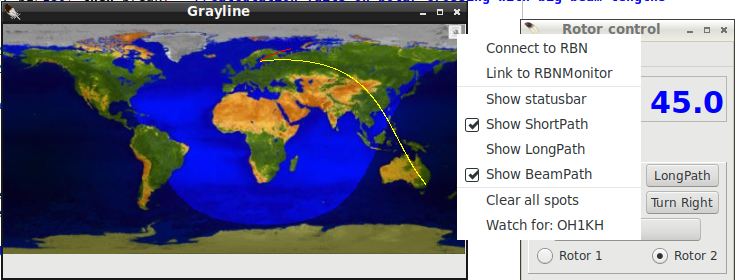
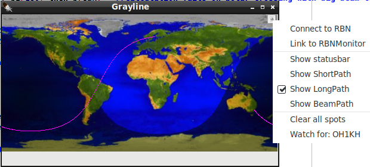
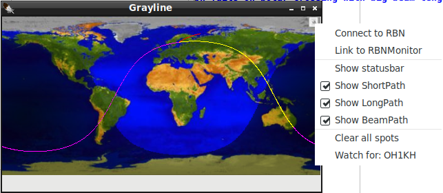

|
WARNING!
Backup your data often! BACKUP your log directory at the end of EVERY session!
All that you need to backup and store in a safe place is the log database directory
located in the ~/.config/cqrlog/database folder, or you can enable the autobackup function
in Preferences. This autobackup function creates an ADIF file with a backup of your log.
/td>
|
CQRLOG for LINUX by OK2CQR & OK1RR

Grayline map
Grayline window opens from NewQSO/Window/Grayline.
Grayline map has speed button at top right corner that opens a popup menu containing:
- Connect to RBN Makes a connection of the Grayline map's own to the source chosen below
(or to the Server/Login from RBN support when no preset is chosen). Choose it when the
map should watch another server than the band maps do. Selecting it again disconnects. "Autoconnect RBN Grayline"
in Preferences does this when the window opens.
- Link to main RBN connection The shared mode and the usual choice: the map listens to the main RBN connection
of the RBN control window, before the global filter, whether or not the RBN monitor window is open.
No second connection is made. Linking and an own connection are alternatives, choosing one ends the other.
- RBN source for "Connect to RBN" The preset the own connection uses, one of the RBN sources edited in the
RBN control window, or "Preferences > RBN support" for the Server/Login pair set there. The choice is stored and
used on the next Connect to RBN; Edit RBN sources... opens the presets dialog.
- Show statusbar Shows the connection state: the name of the source and its state for the own connection,
or "Linked to RBN monitor" and the state of the main connection. The source is always named because a server
that filters its stream shows fewer dots, and nothing in CQRLOG can bring those back. Both connections retry
by themselves after a loss (5 s growing to 5 min) and reconnect a session that stays silent for 3 minutes.
- Show ShortPath By default Grayline map will show straight line from your station (from your locator defined) to station you enter to NewQSO/callsign.
With this selection you can switch the straight line to plotted great circle short path.
- Show LongPath As another option you can select great circle longpath. This can be selected with, or without short path.
- Show BeamPath If you use ROT control you can select to show Beam path heading.
- Clear all spots Clears all RBN spots from map.
Note: Dots also depend on the band, if you change band, dots will always be deleted. All data is band related.
- Watch for Opens an edit window where you can change callsign or prefix watched without opening preferences. see: RBN support
The global RBN filter of the RBN control window does not apply to the Grayline map: every spot of the
connection is a dot, filtered only by "Watch for". Every arriving spot refreshes its spotter's dot; recalculations
in the band maps never do.




